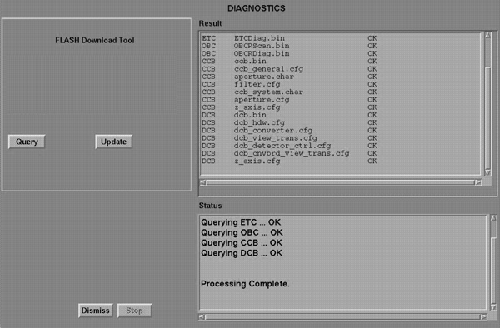

Operating Documentation
Direction 5114043-800, Rev# 9
LightSpeed 3.X Service Methods (Advanced)
Operating Documentation |
| Last Revised: | 15 August 2008 |
This utility loads the FLASH memory located on the system control processors (nodes) with files stored on the system disk. This allows the nodes to initialize quickly after a reset is performed. This utility can also be used to check the nodes for the correct file versions without forcing a download.
This tool must be used at least once after upgrading software or replacing any CCB, DCB, STC, ETC, TCB, OBC, ORP, SCORP, TGP, TGPU, JEDI/PPC, or JEDI tank board. The tool must also be used if an Attention window displays or an error message is logged indicating that a file version mismatch was found.
| NOTE: | Not all systems contain each of the mentioned control boards. The boards used will vary by system type. |
| NOTE: | Flash Download can be performed by one person in 30 minutes time. |
Launch the [FLASH DOWNLOAD TOOL] from the [UTILITIES] tab of the Common Service Desktop. Refer to Illustration 1 for a description of the tool interface.
Illustration 1: FLASH Download GUI

Click the Update button. Verify that all files are downloaded without errors.
| NOTE: | The FLASH Download Tool may need to be run several times to successfully FLASH all control boards. |
The OBC/ORP/SCORP must be downloaded to FLASH the CCB or DCB.
The aperture.char file is unique for each collimator. The numeric part of the serial number must be entered for this file to determine if an upload or download is required.